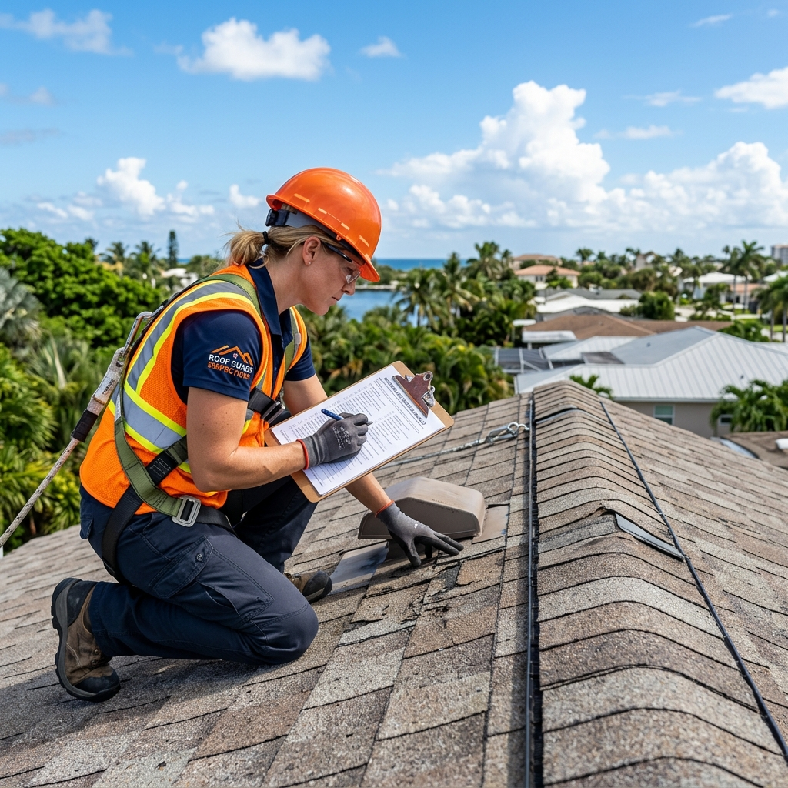

Conducting a systematic exterior and interior check of your roof twice a year allows you to identify critical wear and tear before severe tropical weather strikes. Broward County homeowners can safely evaluate their roof lines, shingles, gutters, and flashing from the ground using binoculars, followed by a thorough inspection of the attic. Any signs of wood decay or moisture intrusion warrant immediate professional inspection.

Why Regular Roof Assessments Are Critical in South Florida
South Florida's unique climate puts incredible stress on residential roofing systems year-round. Intense ultraviolet radiation, high humidity, and salt-laden sea air constantly degrade roof coverings, accelerating the breakdown of shingles, tiles, and underlayment. Homeowners who neglect periodic roof checks often suffer severe interior water damage during summer thunderstorms and tropical storms. Proactively assessing your roof helps you catch small issues like cracked flashing or loose fasteners before they compromise the structural integrity of your roof deck and trigger costly interior repairs or insurance claim denials.
How Do You Spot Shingle Damage and UV Granule Loss?
Examine your asphalt shingles closely for any curling, buckling, or bald spots where the protective mineral granules have worn away. South Florida's intense sun dries out asphalt, causing shingles to lose their flexibility and shed granules, which subsequently accumulate in your gutters. Smooth, bald shingles or curling edges indicate that the material can no longer shed water effectively or withstand high winds.
What Are the Visual Indicators of Gutter and Flashing Failures?
Look for loose, sagging, or clogged gutters that trap water against the roof edge and cause wood rot along the fascia board. Additionally, examine the metal flashing around chimneys, vents, and roof valleys to ensure it remains tightly sealed and free of rust. Damaged flashing or deteriorated caulking is the primary cause of active roof leaks during heavy downpours.
Where Should You Look Inside Your Attic for Roof Leaks?
Access your attic space during a bright day and use a strong flashlight to check the underside of the roof deck for dark water stains, mold growth, or active drips. Pay close attention to areas around vent pipes and chimneys where flashing failures might allow rainwater to seep in. If you see daylight shining through the sheathing, you have a structural gap that requires immediate professional sealing.
How Do You Assess Storm Vulnerability After High Winds?
Following a major windstorm, inspect your yard and roof perimeter for displaced shingles, loose metal components, or cracked roof tiles that may have been dislodged by strong gusts. High winds can lift the edges of asphalt shingles, breaking the adhesive seal and leaving the underlayment vulnerable to subsequent rainfall. Documenting these issues with photographs immediately after a storm provides critical evidence if you need to file a storm damage insurance claim.
Understanding Broward County Permitting and Wind Resistance Standards
Any roof repair or replacement in Fort Lauderdale must adhere to the High Velocity Hurricane Zone provisions of the Florida Building Code. When conducting your inspection, keep in mind that Broward County mandates specific product approvals for all roofing materials, including self-adhering underlayments and wind-resistant fasteners. If you discover damage covering more than 25% of your roof, local regulations require a full replacement that complies with current wind-mitigation standards.
Actionable Steps to Address Roof Issues in Fort Lauderdale
- Document Your Findings: Take clear photographs of all suspected issues, including missing shingles, rusty flashing, or water stains in the attic.
- Clear Debris Safely: Remove leaves, branches, and organic buildup from valleys and gutters to prevent water from backing up under shingles.
- Inspect the Perimeter Seal: Check the seal around skylights, vents, and valleys from the ground to ensure no caulking has dried out.
- Verify Your Credentials: Before hiring help, confirm that your contractor holds active Florida roofing licenses CCC1329271 and CGC1517295.
- Schedule a Professional Roof Check: Contact a licensed contractor like Planet Roofing to conduct a safe, hands-on physical evaluation of your roof deck.
- Consult Your Insurance Broker: Share your wind mitigation report and inspection findings with your insurance carrier to explore potential premium discounts.
Frequently Asked Questions
How much does a professional roof inspection cost in Fort Lauderdale?
A professional roof inspection in Fort Lauderdale typically costs between $150 and $400, depending on the size and complexity of the structure. Many licensed roofing contractors, like Planet Roofing, offer free initial roof assessments for homeowners who are planning repairs or replacements.
How long does a thorough home roof inspection take to complete?
A standard residential roof inspection usually takes between 45 minutes and two hours to complete. The inspector will evaluate the exterior roof covering, analyze the flashing, check the gutter drainage system, and examine the attic interior for moisture signs.
Can you inspect your own roof instead of hiring a contractor?
Homeowners can safely complete basic visual checks from the ground using binoculars and inspect their attics for stains. However, climbing onto the roof itself is highly dangerous and should be left to a licensed, insured roofing contractor with the proper safety gear.
Does a professional roof inspection report help lower Broward County insurance rates?
Yes, a professional wind mitigation inspection report can lead to significant insurance premium reductions for Broward County homeowners. Insurance carriers in South Florida offer substantial credits for roofs that feature certified hurricane clips, secondary water barriers, and modern impact-resistant materials.
Is Planet Roofing licensed to provide certified inspection reports in Florida?
Yes, Planet Roofing is fully licensed by the state under certifications CCC1329271 and CGC1517295 to perform inspections and wind mitigation assessments. The team delivers detailed, engineer-grade reports that meet the strict compliance standards of Broward County building departments and insurance providers.
Need a Professional Roof Inspection?
Maintaining the structural integrity of your roof is the first line of defense against South Florida's unpredictable weather and severe storm seasons. The team at Planet Roofing is dedicated to helping Broward County homeowners protect their investments with detailed roof assessments and durable repair solutions. Contact our local office today to schedule your free, no-pressure inspection and ensure your home remains safe year-round. Call (954) 600-1462 or visit our online contact page to secure your appointment today.
Call (954) 600-1462 Get a Free Inspection